今年六月份，奥斯卡得主摩根·内维尔拍摄的传记纪录片《与我为邻》在美国上映。
上映后便受到评论家和观众的极大好评，烂番茄网站99%新鲜度，评分高达8.8。

电影院场场爆满，很多观众都是步履蹒跚的老人，看到后面，大家都不禁潸然泪下。
电影票房最终收入2200万美元，成为有史以来收入最高的传记纪录片。
电影之所以如此成功，是因为大家都忘不了那位独一无二的罗杰斯先生。
一位长老会牧师，同时也是过去几十年里最有名的美国儿童电视节目主持人。
他的《罗杰斯先生的左邻右舍》从1968年开播到2001年结束，在三十多年的时间里陪伴了一代又一代的美国人。
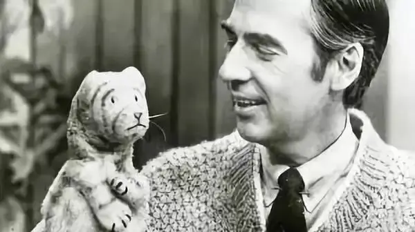
节目曾获四项艾美奖，罗杰斯本人也获奖无数，曾被乔治·W·布什授予总统勋章。
《与我为邻》则通过旧的电视画面、对罗杰斯家人同事的采访以及特别制作的动画为大家还原了罗杰斯传奇的一生。

1928年，弗雷德.罗杰斯出生在匹兹堡东南部的一个小城。
童年时期，罗杰斯比较胖，总是被其他小朋友嘲笑为“胖弗雷德”。
因此，罗杰斯的的童年比较孤独，但是小罗杰斯学会了和自己玩，他可以模仿很多不同的声音来为自己编造快乐。
他还有一个很重要的伙伴，那就是音乐，他五岁时便开始弹钢琴。
因为家人不允许他发怒，当他情绪上来时，他总是可以通过钢琴来宣泄，可以通过指尖来表达他的愤怒、哭泣以及快乐。
小时候罗杰斯的祖父对他的影响很大，祖父曾告诉他：我就喜欢你现在这个样子。
这句话让因为体重而敏感自卑的罗杰斯非常感动，多年以后，罗杰斯仍然不断提起祖父的这句话，甚至成为后来罗杰斯儿童节目的口头禅。
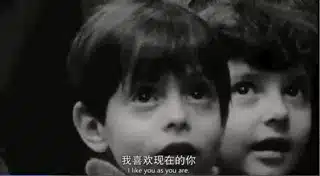
初中、高中罗杰斯的成绩都非常优异，1951年，罗杰斯从位于佛罗里达州的一所大学毕业，获得音乐学位。
大学毕业后，罗杰斯进入电视台从事音乐节目工作，后来他成为了匹兹堡公共电视台一个儿童节目的制片人。
这个过程中，他发现自己对儿童教育有着长足的兴趣，可是罗杰斯对于当时低俗、恶趣味、毫无营养的儿童节目感到非常失望。
为了对儿童有更深的理解，罗杰斯在中午休息时间开始到匹兹堡神学院专研神学和儿童心理学。
1963年，罗杰斯成为一名长老会牧师，教会鼓励他继续通过电视传播媒介关心美国家庭的和谐与儿童的成长。
于是，罗杰斯继续在匹兹堡公共电视台探索真正关心儿童身心成长的节目。
终于，1968年，影响深远的《罗杰斯先生的左邻右舍》诞生了。
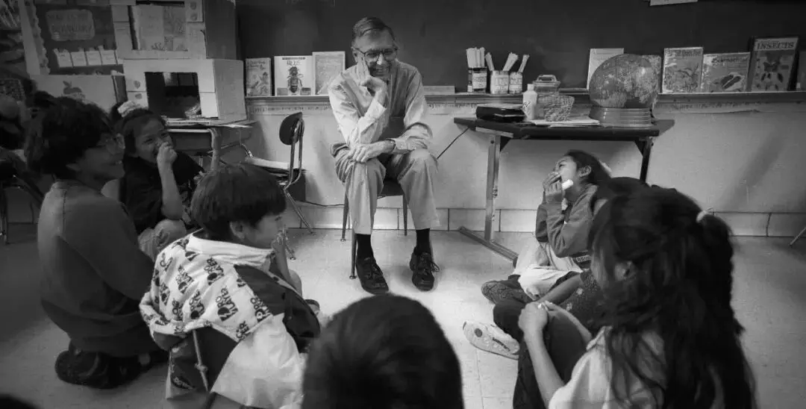
这是一个非常特殊的节目，布景简陋、没有明星、节奏缓慢，没有小丑和浮夸的动作。
罗杰斯总是以一首《你愿意做我的邻舍么？》（Won't You Be My Neighbor?）开始节目。
罗杰斯一边唱着“我一直想和你一样有一个邻居，我一直想和你住在一个社区，所以，让我们充分利用这美好的一天.....”，一边换上自己标志性的毛衣，
这是罗杰斯向孩子们发出的邀请，接着，罗杰斯会通过人偶和观众谈论一些话题。
罗杰斯会和大家谈游戏、谈父母、谈人际关系、谈如何自己上厕所、如何制作蜡笔，他还会带着孩子去面包店、CD商店实地考察，有时还会和孩子一起静静地欣赏一部短片。

节目非常舒缓，但却没有一丝浪费。
罗杰斯总是温文尔雅，他的话语总是非常真诚和充满关怀，能够直达孩子们的心底。
他曾说：
你可以给任何人的最伟大的礼物之一就是诚实的自己，我也相信孩子们可以在一英里远的地方发现任何一个假。
因此，罗杰斯真诚地对待每一个孩子，努力聆听每一个孩子的声音，竭力去理解这些孩子的感受和需要。
罗杰斯看到摄影机时，他就想到那是一个人，那个人和他之间的区域是很神圣的地方，那里将会发生很多事。
为此，罗杰斯像看护小天使一样为他们准备节目，创作歌曲。

每天，罗杰斯会在凌晨5点起床，然后，他会为他的所有朋友和家人祈祷，接着开始学习、写作、打电话，并回应每一封来自粉丝的邮件。
在节目后面的情节中，罗杰斯先生总是会告诉观众他正在大声喂鱼。
为什么？
原来，有一天罗杰斯收到一封名叫凯蒂的盲女的信，信中写道：“请说出你在喂鱼，因为我担心他们，但我看不到你是否在喂它们，所以请你大声地说出你在喂它们。“
凯蒂的爸爸告诉罗杰斯，如果罗杰斯没有提到他喂鱼，凯蒂会哭，这会使眼睛更加恶化，为此罗杰斯先生每一次都会告诉观众他正在喂养鱼。
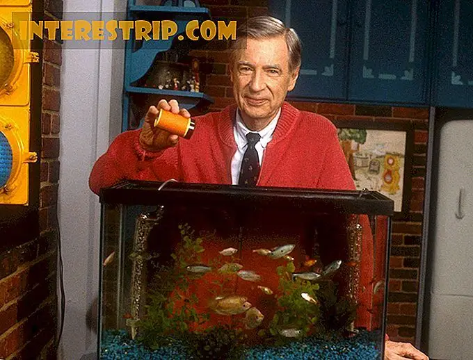
正是这样的爱，孩子们和家长总是能够从这个“简陋”的节目上感受到尊重和关怀。
罗杰斯也从没有忘记作为孩子的脆弱，他明白现实世界的惨剧会在孩子心灵中留下怎样的阴影。
当肯尼迪被暗杀、当挑战者号航天飞机爆炸、当父母离婚时....罗杰斯从不像其他成年人那样忽视孩子们的感受，他知道小孩子的感受和大人的感受一样强烈。
他不忍心幼小的孩子们被自己对死亡和毁灭的幻想摆布。
因此，罗杰斯的节目从不会避忌谈论死亡、暗杀、战争、种族歧视、离婚这些沉重的话题。
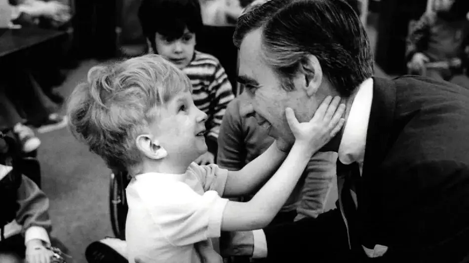
节目会通过吹起气球然后再放掉气来向小朋友解释什么是死亡。
当社会上发生种族歧视的事件时，罗杰斯便在节目中端了一盆水，和一位黑人同事一起洗脚。
罗杰斯在用这个最简单易懂的行动告诉孩子们，白人和黑人是平等的，是可以彼此接纳的。
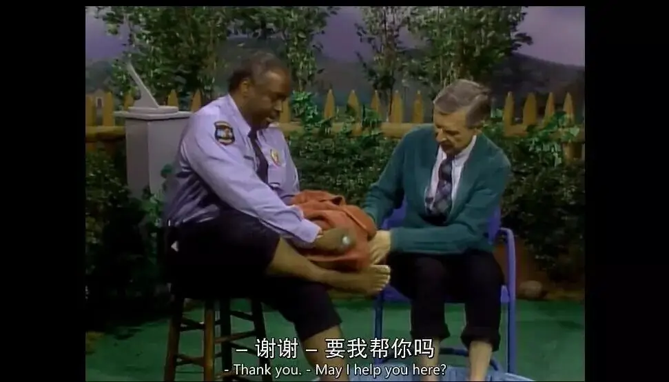
当全国沉浸在肯尼迪被刺杀的悲痛中时，罗杰斯不会故作坚强，他会坦承这段时间很难熬，同时告诉孩子，家人永远和你们站在一起，他会用爱让孩子们感受到希望和力量。
当小孩子看到玩具狗狗的耳朵掉到洗衣机而心生恐惧时，罗杰斯会温柔地告诉他：
有时候玩具会这样，不是么？ 他们的腿和胳膊会掉下来。
但是我们不会，我们的耳朵不会掉，我们的鼻子不会掉，我们的腿也不会掉。
对于一些残疾的孩子，他们总是非常自卑，作为一名基督徒，罗杰斯深深地明白，并非所有人都能够成长，除非他真正接受了他自己。
因此，罗杰斯每天都给每位孩子表达出一种关爱，去帮助他意识到，他是独一无二的。
每次节目结束，罗杰斯总会唱起那首可爱的《你很特别》，告诉每一个孩子“这世界上没有一个人和你一样，我喜欢现在的你”。
曾经，有一个叫做杰夫的残疾男孩出现在节目中，罗杰斯温柔地蹲在轮椅旁，抓着杰夫的手唱起那首感人的《我喜欢的就是你》。

这对于杰夫的自我意识和成长有着重要的影响。
多年以后，成年的杰夫再次出现在年迈的罗杰斯面前时，两人彼此拥抱激动不已，场面非常感人。
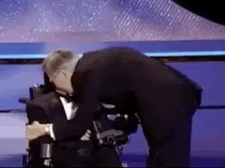
除了对于孩子们的爱，罗杰斯对于家人、同事也是充满了爱和祝福。
节目中很多玩偶都是罗杰斯根据自己家人、朋友的形象创作的，比如说女王萨拉就是以他的妻子莎拉伯德命名。
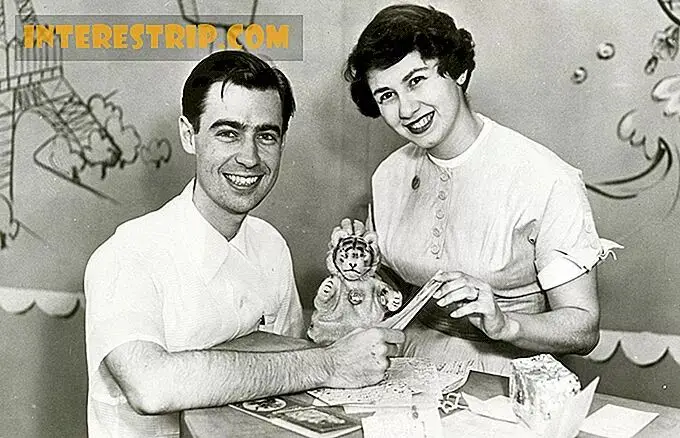
罗杰斯既持守着基督徒的信仰，又对很多不同的思想保持着开放和接纳。
他的一位黑人同事是一名同性恋，罗杰斯是基督徒，并不赞同同性恋，但他并没有歧视他，而是告诉他：我爱你现在的样子。
感受到被接纳，这让对方非常感动，因为就是他自己的父亲也没有说过这样的话，从此他将罗杰斯看为自己的代理父亲。

这种对于爱和恩典的高举来自于他的信仰。
圣经中，耶稣教导门徒要爱邻舍，罗杰斯在家庭和工作中努力践行着这一信仰理念。
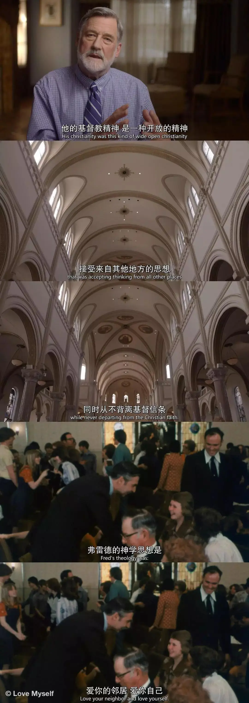
正因为如此，罗杰斯的节目有别于其他节目，他的节目拥有善良和爱的独特愿景，并且融合了作为牧师的感觉和他自己的童年经历。
罗杰斯明白唯一可以改变世界的就是让人们意识到爱可以丰盈，也可以分享。
你不需要做什么惊天动地的事让别人爱你，你要做的就是坚信你被上帝赋予了善。

为了高举爱，罗杰斯甚至30年里坚持将自己的体重控制在143斤，因为143这个数字对他有着特别的意义，它代表I LOVE YOU。
马友友曾经上过罗杰斯的节目，当他知道143的故事时，他感到非常吃惊。
节目现场，罗杰斯也是大大地把马友友吓了一跳，当马友友带着大提琴来到节目现场时，罗杰斯便很好奇地扑向他的提琴，抚摸着琴弦，并且很“调皮”地看着他。
后来，马友友才反应过来，罗杰斯这些举动完全是孩子式的。
像孩子一样去理解他们的世界，并以孩子式的方式将爱和知识传递给孩子，这让马友友非常敬佩。
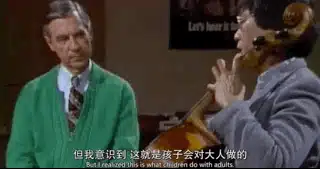
罗杰斯自己并非是一种圣人式的存在，他也有自己的软弱。
因为他一贯的温润和包容，罗杰斯被一些人讥笑和恶搞，有些人指责他毁掉了美国年轻一代，让他们变成了一群不求上进的人，有些人甚至公开质疑他是同性恋。
罗杰斯曾经在节目上借着条纹虎丹尼尔表达了自己的软弱，他告诉萨拉女王：
有时候我想 我是不是太温顺了
我有时候我怀疑 我是不是个错误
我和我认识的人都不一样
无论我睡着还或是醒着
有时候我梦到自己是假的
我和别人不一样
萨拉女王温柔地告诉他：我觉的现在的你是最好的，你不是假的，也不是个错误，你是我的朋友。
这个场景，两人通过二重唱的方式呈现，丹尼尔不停地怀疑自己，萨拉则不停地安慰着他，直至丹尼尔充满感激地望着萨拉女王。
这个场景让人非常感动。
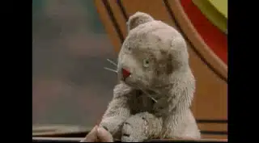
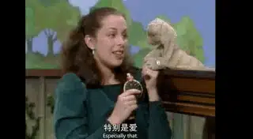
信仰上，罗杰斯也并非一直充满信心，临终前，他问妻子，你觉得我是一只绵羊么。
这是圣经中的一个比喻，耶稣把信徒分为两边，一边是能得救的绵羊，一边是不能得救的山羊。
也就是说，这位一生践行信仰的牧师在生命的尽头仍然对自己的基督徒身份心存怀疑。
他的妻子告诉罗杰斯：如果有绵羊，你肯定就是。
2003年罗杰斯安息主怀，一个小行星以他的名字命名。
美国参议院一致通过决议，以纪念罗杰斯的巨大贡献：
“通过他的灵性和平静的特质，罗杰斯先生能够接触到我们国家的孩子，并鼓励他们每个人了解他们在社区和家庭中发挥的重要作用。
更重要的是他并没有回避处理死亡和离婚等难题，而是鼓励孩子以健康、建设性的方式表达自己的情感，往往为生活的艰辛提供一个简单的答案” 。

罗杰斯一生最伟大的事情就是帮助无数孩子，让他们知道他们被爱，也有爱的能力。
这种影响是极其深远的，耶鲁的心理学研究曾比较了看“罗杰斯先生”和看“芝麻街”的孩子们。
最终发现，看罗杰斯先生的孩子不仅记得更多的故事情节，而且还表现出更高的延迟忍耐力。
罗杰斯不仅深刻影响了一代又一代的孩子，还深深地影响了家长，曾执导过《少女日记》的女导演玛丽埃尔·海勒就是其中之一。
她表示“作为一个母亲，我深受弗雷德·罗杰斯的教育启发，作为一个人，我对他毕生的工作充满敬畏”
海勒说道，“我迫不及待地想把他的故事带给公众，并成为这样一个深思熟虑、智慧的群体中的一个，这些人都聚集在一起制作这部电影，这让我觉得这是对我们支离破碎的文化的一剂良药。”
为此她从今年上半年便开始着手拍摄罗杰斯的传记片《你是我的朋友》，主演是奥斯卡影帝汤姆.汉克斯，电影会在明年上映，很值得我们期待。

罗杰斯一生践行信仰，并用毫无条件的爱改变了无数人。
这对于我们是一个很大的鼓励和提醒，我们在工作岗位上不应是生无可恋、半死不活的状态，应当怀着极大的敬畏完成手上的每一件事，工作也能成为自己和他人的美好祝福。

这里没有挑逗你眼目情欲的小鲜肉
也没有挑动你肉体情欲的段子
更没有膨胀你今生骄傲的鸡血
我们只在乎那些最质朴真诚的作品
在那里我们才能恢复真正的想象力
我们也坚信这才是我们真正需要的

ID:Six_hundred_hits
长按二维码，一键关注
【六百击】
-END-
电影评论
尽情分享朋友圈

苹果打赏通道
小提示：文末广告是腾讯配送广告，内容与本号无关，但您的每次点击（无需反复点）都会给平台带来几毛收益，欢迎您点击支持六百击。